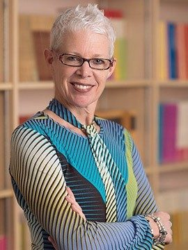

UBC SJI - Dr. Becki Ross
February 24th, 2021
I have decided that, because I am a sucker for easy to produce content, I'm going to be making some articles simply publishing the biographies of the members of the University of British Columbia's "Social Justice Institute." I scrolled through a few of them, and while they were all humorous, I think I'll start with Becki Ross.
UBC SJI:
TDC_ARTICLE_START
Since 1995, Dr. Becki Ross has held a joint appointment in the Institute of Gender, Race, Sexuality, and Social Justice and the Department of Sociology. She teaches and researches in the areas of the history of sexuality, ‘the family’, gender relations, qualitative methods, anti-racist studies, critical sport studies, and queer culture. Becki is the recipient of two teaching awards (2005 & 2008). She has supervised/co-supervised graduate students on diverse topics: the history of sexual education in BC, representations of gender and ‘race’ in video games and mainstream advertising, queer spaces on Canadian university campuses, contemporary butch/femme relations, bi-racial South Asian women’s heterosexuality, inter-racial white/Asian gay male relationships, and queer courtship & marriage in Vancouver. Dr. Ross’s publications appear the Journal of Historical Sociology, Sexualities, Journal of Women’s History, Labour/le travail, Canadian Review of Sociology and Anthropology, and the Journal of the History of Sexuality. With Sharon Lebenkoff she completed a 35-page chapter (online) for McGraw Hill Ryerson on themes of dating, marriage, cohabitation, and same-sex relations. With Oralia Gomez-Ramirez, Dr. Ross contributed an article on the state regulation of recruiters in the adult entertainment industry (exotic dancing, specifically) for a special issue on “Burlesque” by the Canadian Theatre Review. Becki is completing a manuscript titled, Expelled: The Neo-Colonial Rule of Unruly Sexual Subjects in Vancouver, 1975-1985. On the administrative front, Dr. Ross was the co-chair of Critical Studies in Sexuality (2004-2007). From 2009-2012 she served as the Chair of the (then) undergraduate program in Women’s and Gender Studies. In 2012-2013, Dr. Ross was a consultant on the exhibit, “Sex Talk in the City: the classroom, the bedroom, the street” for the Museum of Vancouver (MOV). She coordinated the first ‘all sex worker’ panel at the MOV in April 2013, and co-led, with Jamie Lee Hamilton, “Strolling the Stroll,” a commemorative tour of 10 landmarks along what was once the Davie Street stroll in Vancouver’s West End.
TDC_ARTICLE_STOP

Becki here didn't see fit to include any fucking paragraph breaks, so I didn't either. However, that's fucking retarded, so I'm going to reprint her bio with a bunch of paragraph breaks, because I'm not a fucking retard.
TDC_ARTICLE_START
Since 1995, Dr. Becki Ross has held a joint appointment in the Institute of Gender, Race, Sexuality, and Social Justice and the Department of Sociology. She teaches and researches in the areas of the history of sexuality, ‘the family’, gender relations, qualitative methods, anti-racist studies, critical sport studies, and queer culture.
Becki is the recipient of two teaching awards (2005 & 2008). She has supervised/co-supervised graduate students on diverse topics: the history of sexual education in BC, representations of gender and ‘race’ in video games and mainstream advertising, queer spaces on Canadian university campuses, contemporary butch/femme relations, bi-racial South Asian women’s heterosexuality, inter-racial white/Asian gay male relationships, and queer courtship & marriage in Vancouver.
Dr. Ross’s publications appear the Journal of Historical Sociology, Sexualities, Journal of Women’s History, Labour/le travail, Canadian Review of Sociology and Anthropology, and the Journal of the History of Sexuality. With Sharon Lebenkoff she completed a 35-page chapter (online) for McGraw Hill Ryerson on themes of dating, marriage, cohabitation, and same-sex relations. With Oralia Gomez-Ramirez, Dr. Ross contributed an article on the state regulation of recruiters in the adult entertainment industry (exotic dancing, specifically) for a special issue on “Burlesque” by the Canadian Theatre Review. Becki is completing a manuscript titled, Expelled: The Neo-Colonial Rule of Unruly Sexual Subjects in Vancouver, 1975-1985.
On the administrative front, Dr. Ross was the co-chair of Critical Studies in Sexuality (2004-2007). From 2009-2012 she served as the Chair of the (then) undergraduate program in Women’s and Gender Studies. In 2012-2013, Dr. Ross was a consultant on the exhibit, “Sex Talk in the City: the classroom, the bedroom, the street” for the Museum of Vancouver (MOV). She coordinated the first ‘all sex worker’ panel at the MOV in April 2013, and co-led, with Jamie Lee Hamilton, “Strolling the Stroll,” a commemorative tour of 10 landmarks along what was once the Davie Street stroll in Vancouver’s West End.
TDC_ARTICLE_STOP
Highlights:
"gender and 'race' in video games" - God I wonder why we had GamerGate.
"queer spaces on campuses",
"contemporary butch/femme relations," - WTF? Is this how normal women interact with Lesbos? Or how Lipstick Lesbos interact with Deep Voiced Lesbos?
"bi-racial South Asian women's heterosexuality" - That is the weirdest specialty I have ever seen.
"inter-racial white/Asian gay male relationships" - why is White not capitalized? Also, again, VERY specific here Becki
"queer courtship and marriage in Vancouver."
"Expelled: The Neo-Colonial Rule of Unruly Sexual Subjects in Vancouver, 1975-1985"
I'm just trying to collect a little list of absurdities. I think it could prove quite useful one day.